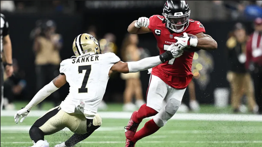
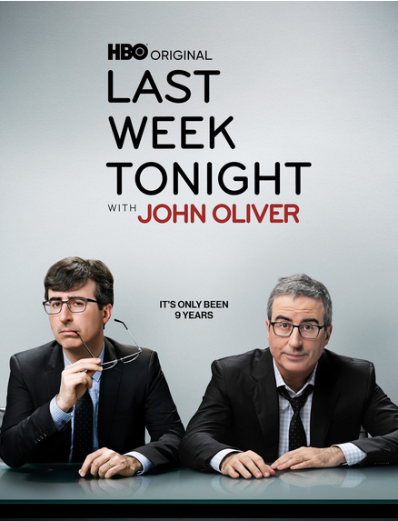
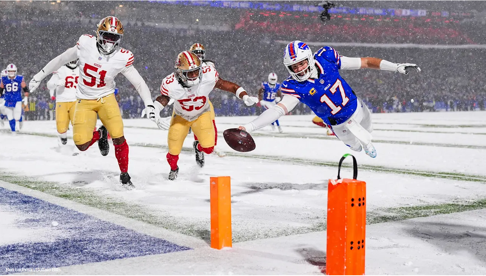

WELCOME fellow football degens…to this week’s EXTENDED version of the Fantasy Fucks Power Rankings, brought to you this morning by your favorite guest ranker’s favorite guest ranker — Mike Honcho (aka Josh Allen’s Hand Me Down Hog, aka That Weirdo in Utah, aka the Giant Midget, aka Neil).
With our fearless writer Snake mostly out of pocket this week in Mexico, I’ve been called upon to be the most entertaining and effective backup as possible.
For comparison’s sake, I’m kinda like the Doug Flutie of FF power rankings. The only real differences between us are that he’s taller, I’ve got a stronger throwing arm — but we’ve both been featured on the same number of cereal boxes, and have led our teams to a combined 0 championship game appearances.
We’ve got A LOT to look at so far after these first 4 weeks, so let’s fucking dive in!
What happened last week?

Well, at the beginning of last week, this very important question led us to a very important answer…“the 0–2 teams revolted.” Several teams that desperately needed wins, got them.
But after this week was all said and done, we were mostly sent back to where we started after Week 2. There are a few powerhouses, perhaps some varying degrees of asscheeks throughout the rest of the ranks, and a whole lot of question marks everywhere else.
I think we’ve all been around the NFL, and fantasy in general long enough (Fantasy Fucks especially), to know that whatever is going on after 4 weeks, it isn’t necessarily indicative of how things will shake out come playoff time. More on all that to come…
Week Four Recap
 Tony
Cee Deez Nuts
McMillan 45.2 · Lamb 41.3
178.78W
Tony
Cee Deez Nuts
McMillan 45.2 · Lamb 41.3
178.78W
 Jake
Juwana Trade?
Williams 31.3 · Purdy 19.62
107.42L
Jake
Juwana Trade?
Williams 31.3 · Purdy 19.62
107.42L
 Neil
JA17’s Hand Me Down Hog
Robinson 27.7 · Allen 18.52
106.42W
Neil
JA17’s Hand Me Down Hog
Robinson 27.7 · Allen 18.52
106.42W
 Andy
U Sown Loik Ya Frm LONDON
Taylor 22.7 · Young 21.46
105.06L
Andy
U Sown Loik Ya Frm LONDON
Taylor 22.7 · Young 21.46
105.06L
 Seif
Dont PUKA da BEAR
Williams 36.7 · Nacua 27.7
163.02W
Seif
Dont PUKA da BEAR
Williams 36.7 · Nacua 27.7
163.02W
 Pangy
Josh Allen’s New Phat Hog
Higgins 26.7 · Burrow 23.72
111.92L
Pangy
Josh Allen’s New Phat Hog
Higgins 26.7 · Burrow 23.72
111.92L
 Kris
Spitters not Quiters
Collins 30.8 · Monangai 28.0
168.88W
Kris
Spitters not Quiters
Collins 30.8 · Monangai 28.0
168.88W
 PJ
The Questionables
Nabers 23.2 · Samuel 18.0
110.66L
PJ
The Questionables
Nabers 23.2 · Samuel 18.0
110.66L
 CJ
Monty’s python Hurts good
Walker 30.9 · Olave 19.6
128.02W
CJ
Monty’s python Hurts good
Walker 30.9 · Olave 19.6
128.02W
 Joel
JOELLM
Brown 19.1 · Vele 17.4
90.8L
Joel
JOELLM
Brown 19.1 · Vele 17.4
90.8L
League overview
| Team | Record | PF | Scoring | |
|---|---|---|---|---|
| 1 | Kris | 4–0 | 592.34 |
W1: 152.66W2: 142.90W3: 127.90W4: 168.88
|
| 2 | Tony | 4–0 | 538.28 |
W1: 136.16W2: 116.28W3: 107.06W4: 178.78
|
| 3 | CJ | 3–1 | 566.82 |
W1: 179.52W2: 138.76W3: 120.52W4: 128.02
|
| 4 | Neil | 3–1 | 472.66 |
W1: 133.96W2: 137.42W3: 94.86W4: 106.42
|
| 5 | Jake | 1–3 | 476.92 |
W1: 121.44W2: 105.08W3: 142.98W4: 107.42
|
| 6 | Pangy | 1–3 | 465.64 |
W1: 68.06W2: 115.88W3: 169.78W4: 111.92
|
| 7 | Seif | 1–3 | 456.14 |
W1: 109.56W2: 77.62W3: 105.94W4: 163.02
|
| 8 | Andy | 1–3 | 451.94 |
W1: 113.62W2: 126.42W3: 106.84W4: 105.06
|
| 9 | Joel | 1–3 | 403.40 |
W1: 147.00W2: 91.26W3: 74.34W4: 90.80
|
| 10 | PJ | 1–3 | 399.38 |
W1: 93.50W2: 82.10W3: 113.12W4: 110.66
|
Matchup of the Week
3-1
1-3
All of this week’s matchups are really important in the grand scheme of things…but for varying reasons, and with varying degrees of said importance. So unfortunately, (or fortunately?), you’re going to get my quick thoughts on each one, and you’re going to like it.
In no particular order, I’ll just run down the list as they show up for me in Sleeper:
Neil vs Tony
The only matchup this week where both teams are over .500. Compact Disc Sheep followed up his unreal 17 catch performance in week 4 with a whopping 2.90 points on Thursday night. This author likes that. But I can speak from experience already this year, one amazing (or asscheeks) TNF performance will not be the sole determining factor in how the matchup will shake out.
Snake vs Pangy
With both teams at 1–3, this really has the feel of a do-or-die matchup, with the winner getting right back in the mix, and the loser probably needing a miracle run to claw their way back into playoff contention. On Thursday, Jake opened up an early 42–5 lead after a good performance by Javonte…and an exceptional performance by George Pick’ems. And from what I have seen across Fantasy so far this year (and, frankly, every other preceding year) this pretty much guarantees the win already for Snake. Well done Snake!
Kris vs Andy
The Fucking Catalina Wine Mixer Turner Bowl. Kris’s team is pretty goddamn stacked — and a win keeps him undefeated, on top of the standings, and perhaps most importantly for him (idk, I don’t have any brothers), will send his older bro down into at least a share of tenancy in the league basement.
Joel vs Seif
An extremely intriguing matchup between two 1–3 teams. After getting dog-walked in most matchups on the way to an ugly 0–3 start, Seif’s team was looking lost. But I really never thought that was a fair telling of the whole story. Bowers is now back, and his underperformers look set to start performing again. After a very impressive 163 point performance in Week 4, Seif gets his first win and looks to build some momentum against Joel…another one of Fantasy Fucks resident 1–3 teams thus far.
This one is fookin’ huge in the grand scheme of things for both of these guys. Joel’s gotta be loving the 31.5 points from Bucky on Thursday night, and despite the projections showing Seif still having a slight edge in the matchup, I’ll just say my simple thought about that…Fuck the Projections.
CJ vs PJ
Hey…that rhymes!
CJ is one of only 4 teams with a non-losing record, which is a key distinction between being one of the 4 teams with a winning record (more on this fact later in the write-up). But we don’t need to read, once more, how great it will be for one of the over .500 teams to win this week, and how bad it will be for one of the under .500 teams to lose. Because there is a much more interesting facet to this week’s specific matchup between CJ and PJ…
The most entertaining Side Bet procured within Fantasy Fucks every year has to be the one between PJ and CJ. For those that may be unaware, for several years they’ve agreed to a simple, yet savage side bet: Most Points-For throughout the regular season. Each point = $1. No max.
While I don’t have the exact numbers in front of me, I can say with confidence that this has been a very lucrative side bet for PJ over the years. But so far this year, CJ holds a 167 point lead over PJ in total Points-For. This week, in a massive head-to-head matchup where every point really matters, they each have an opportunity to either see that lead extend, or make a much-needed dent in it.
Unofficial pick
So between the standings AND side bet implications, this is my unofficial pick for Matchup of the Week.
Waiver Wire
Although there was some good activity, this was definitely a lighter week overall compared to the first 3 Waiver Wednesdays of the year. Which is to be expected at this point in the season.
That said, a few notable points:
- Joel letting fly $18 for Keon Coleman. Honestly, I quite like it. I’m obviously biased, but I’m sure that I’ve watched more Bills snaps than anyone here this year, and Keon does actually look legit for the Bills offense. DJ Moore might be perpetually hurt, and even with DJ available for Buffalo’s offense, Keon has shown he has real value as one of the Bills “X” receivers. He also outbid the next person by $18. But hey…as Joel does, when you love the Bills receivers, you love the Bills receivers. And when you have a chance to spend $17 more on Keon Coleman than you have to, you simply gotta take that opportunity and run with it.
- PJ drops Bo Nix to snag last year’s MVP runner-up in Drake Maye for $11. Bo hasn’t looked great, but neither has Maye thus far…until he faced Buffalo’s extremely porous secondary. Will it work out? Nothing personal, but I sure as fuck hope that it does not.
- PJ snagged the Falcons fake B. Robinson (Brian) for $5, over the only other bid of Neil’s $4. It is inexcusable for Neil not to get the very productive handcuff of the Falcons real B. Robinson (Bijan), considering his overall roster right now, and how little extra FAAB it would have cost him to do so. He got cute, and it may very well end up costing him in the long run.
Here’s the list of players that have scored 3 TDs in a game so far this NFL season: Jaxon Smith-Njigba, Jahmyr Gibbs, Derrick Henry, Javonte Williams, D’Andre Swift, David Montgomery and Brian Robinson Jr.
Bonus Quick Hit
On Friday morning, Neil missed out on the Jets’ Braelon Allen by $1. A simple $3 bid would have gotten it done, and with Breece Hall out for at least this week, that could have been an important RB pickup. Now he’s holding 3 QBs on our already small rosters, with very little key depth elsewhere. This is probably more inexcusable than missing out on B. Robinson’s backup, B. Robinson. With these two decisions, Neil has earned the undesirable title of this week’s Waiver Wire Wannabe.
Trades
- Jake gets Carnell Tate and $26; Kris gets Matthew Stafford (two days after Jake picked up Stafford for $1!)
Season pickups (91)
Saturday, Oct 10
- Jake - Mike Washington (RB) - $1
Friday, Oct 9
- Neil - JAX D/ST (DST) - $3
- CJ - Braelon Allen (RB) - $2
- Neil - Jacoby Brissett (QB) - $1
Thursday, Oct 8
- Andy - Aaron Rodgers (QB) - $1
- CJ - CIN D/ST (DST) - $1
- CJ - Jayden Daniels (QB) - $1
Wednesday, Oct 7
- Joel - Keon Coleman (WR) - $18
- PJ - Drake Maye (QB) - $11
- PJ - Brian Robinson (RB) - $5
- Andy - DEN D/ST (DST) - $1
- Andy - T.J. Hockenson (TE) - $1
- Joel - NYG D/ST (DST) - $1
- PJ - Will Reichard (K) - $1
Sunday, Oct 4
- Andy - KC D/ST (DST) - $0
Saturday, Oct 3
- Kris - Emanuel Wilson (RB) - $3
- Pangy - Jakobi Meyers (WR) - $1
Friday, Oct 2
- CJ - GB D/ST (DST) - $1
- Joel - Tyreek Hill (WR) - $1
Thursday, Oct 1
- Seif - Spencer Shrader (K) - $1
Wednesday, Sep 30
- Andy - Braelon Allen (RB) - $27
- Joel - Kenyon Sadiq (TE) - $18
- Neil - Jordan Addison (WR) - $16
- CJ - Alvin Kamara (RB) - $12
- Jake - PIT D/ST (DST) - $7
- Seif - Sam Darnold (QB) - $4
- Tony - Ollie Gordon (RB) - $4
- Joel - BUF D/ST (DST) - $3
- PJ - Kalif Raymond (WR) - $3
- PJ - Bo Nix (QB) - $2
- Tony - Keenan Allen (WR) - $2
- Andy - Tyler Loop (K) - $1
- Jake - Matthew Stafford (QB) - $1
- PJ - CHI D/ST (DST) - $1
- Pangy - Harold Fannin (TE) - $1
Sunday, Sep 27
- Joel - Terrance Ferguson (TE) - $5
- Kris - Malik Washington (WR) - $0
- Seif - Justin Herbert (QB) - $0
Saturday, Sep 26
- Neil - Khalil Shakir (WR) - $1
Friday, Sep 25
- Pangy - Caleb Douglas (WR) - $1
Thursday, Sep 24
- Jake - Drake Maye (QB) - $4
- Jake - J.K. Dobbins (RB) - $3
- PJ - Kyler Murray (QB) - $2
- Andy - Jordan Love (QB) - $1
- Andy - Xavier Worthy (WR) - $1
- Jake - Emmett Johnson (RB) - $1
- Neil - Matt Gay (K) - $1
Wednesday, Sep 23
- PJ - Denzel Boston (WR) - $23
- PJ - Dalton Schultz (TE) - $18
- Joel - Patrick Mahomes (QB) - $16
- Andy - Bryce Young (QB) - $11
- Kris - Rashod Bateman (WR) - $11
- Neil - Tyler Shough (QB) - $9
- Seif - George Kittle (TE) - $9
- Neil - Jonah Coleman (RB) - $8
- Tony - Jared Goff (QB) - $4
- CJ - Josh Downs (WR) - $3
- Joel - NYG D/ST (DST) - $3
- PJ - Harrison Butker (K) - $2
- Jake - Jordan Mason (RB) - $1
- PJ - NO D/ST (DST) - $1
- Seif - Tyler Loop (K) - $1
- Tony - CIN D/ST (DST) - $1
Sunday, Sep 20
- Andy - NE D/ST (DST) - $1
- Andy - Travis Kelce (TE) - $1
- Jake - Evan McPherson (K) - $0
- Neil - Trey Smack (K) - $0
Friday, Sep 18
- PJ - GB D/ST (DST) - $1
Thursday, Sep 17
- CJ - Aaron Jones (RB) - $12
Wednesday, Sep 16
- Seif - Jalen Coker (WR) - $23
- Joel - Devaughn Vele (WR) - $15
- Pangy - Kaelon Black (RB) - $11
- Tony - Matthew Golden (WR) - $9
- Neil - SF D/ST (DST) - $6
- Seif - Kenyon Sadiq (TE) - $6
- Jake - Brock Purdy (QB) - $4
- Andy - Caleb Douglas (WR) - $2
- CJ - KC D/ST (DST) - $1
Earlier
- Jake - Chase McLaughlin (K) - $0
- PJ - Jaxson Dart (QB) - $0
- Seif - Darren Waller (TE) - $1
- CJ - T.J. Hockenson (TE) - $1
- Pangy - Tyler Allgeier (RB) - $1
- Seif - Tyler Loop (K) - $1
- Joel - TB D/ST (DST) - $1
- Tony - Jacob Saylors (RB) - $1
- Andy - Woody Marks (RB) - $1
- PJ - Deebo Samuel (WR) - $1
- Pangy - Mike Washington (RB) - $0
- Seif - MarShawn Lloyd (RB) - $4
- CJ - LAC D/ST (DST) - $0
Reason for trepidation / Reason for optimism
This week’s ranking theme is going to highlight the Haves vs. the Have Nots — simply in terms of W-L record after 4 weeks. While there is obviously still a ton of regular season left for us Fantasy Fucks, four teams have found themselves with either a 2 or 3 game lead over the 5th place team. Or should I say…the 5th place teams.
Heading into Week 5, we have SIX teams that are all sitting on a 1–3 record. That is absolutely diabolical. Not even one poor soul is stupid and/or unfortunate enough to be sitting at 0–4?? Nope. And after all of these matchups, NOBODY is sitting at a respectable .500 record at 2–2?? Negative.
So for the 4 teams currently in playoff positions, I’m going to highlight a reason for trepidation — why things aren’t necessarily as good for you right now as it may seem. And for the 6 teams ALL sitting at 1–3, I’m going to give you a reason for optimism — why you’re only a couple of coin flips away from surging into one of those 4 coveted playoff positions at the top of the standings.
But before we dive in and do all of that, I’ll give one extra overall shared point of hope for all six of you 1–3 teams:
There are fucking SIX of you.
And there are definitely weaknesses about the teams currently sitting up top. The entire playoff outlook can absolutely flip on a dime over the next few weeks. And frankly, I’m here for chaos.
1. Kris — Spitters not Quiters Last Week: 1 ↔
4-0 W4 PF: 592.34 FAAB: $60
Week-to-week scoring spread 40.98
Dashed line is league average (120.59). Same scale for every team.
The reigning champ’s team really is fucking stacked. Got the #1 overall pick, and Gibbs has put up #1 overall pick numbers. Nailed his keeper in JSN, who has picked up right where he left off after last year’s OPOY season.
And while keeping JSN as the last pick in the 2nd round might seem like a lay-up (which it was), not all high-upside 3rd round keepers are going to necessarily pan out, despite how much hype their manager may have for them. I know for a fact there’s one manager that seems to have whiffed on his keeper right in the same range, but for privacy reasons, I can only call him Neil C. Hmmmm no, that’s too obvious. Let’s call him N. Calvert.
Reason for trepidation
Honestly, I’m not really sure here. Perhaps his more tenured pedigree of being a Slutler will overtake the more recent pedigree of being a champion.
2. CJ — Monty’s python Hurts good Last Week: 3 ▲
3-1 W1 PF: 566.82 FAAB: $66
Week-to-week scoring spread 59.00
Dashed line is league average (120.59). Same scale for every team.
CJ’s team is just putting up monster numbers week over week, and despite having one tough loss in week 3 where Pangy’s team just went absolutely HAM, CJ has weapons throughout every one of his roster spots.
Kenneth Walker III looks to be a huge fucking steal, despite still being a high draft pick in his own right (especially looking at some of the guys who went right before him). If we re-drafted today, KWIII likely goes #3 overall behind the consensus top 2 RB’s in Bijan and Gibbs…and those picks both essentially made themselves. CJ got insane value for KWIII in the middle of the 2nd round.
Reason for trepidation
Can his top performers continue to show consistency over the length of the season? His stud, the aforementioned KWIII, is on a bye this week. For several reasons, any loss to PJ this week severely damages the aura he’s built up over the first 4 weeks of the season.
3. Tony — Cee Deez Nuts Last Week: 2 ▼
4-0 W4 PF: 538.28 FAAB: $79
Week-to-week scoring spread 71.72
Dashed line is league average (120.59). Same scale for every team.
Lots of talent on this roster. No matter how you shake it, Tony is 4–0 with a 2 game lead for a playoff spot (effectively 2.5, if we dial into his very solid 538 PF so far after 4 weeks).
While the FF regular season is still young…it’s not THAT young. We’re a third of the way through, and a 2.5 game cushion is huge. With the players that Tony has, at the very least every game should be close. It’s going to take a lot of bad luck for him to ultimately get leapfrogged by multiple teams below him and find his squad on the outside looking in as we march toward the playoff stretch.
Reason for trepidation
Tony has some monsters on this squad…but like we just saw on TNF with CeeDee’s absolute dud, or Tet McMillan’s NFC POY performance the week prior, will he be sweating the good end of boom-or-bust performances every week in order to rack up big points consistently? I can say from experience…that is a dangerous game, amigo.
4. Neil — JA17’s Hand Me Down Hog Last Week: 5 ▲
3-1 W1 PF: 472.66 FAAB: $55
Week-to-week scoring spread 42.56
Dashed line is league average (120.59). Same scale for every team.
Josh Allen is already on the Mt. Rushmore of NFL fantasy QBs. But after the first two weeks this season, it looked like he might need a new mountain carved out just for him, sitting like Zeus on Mt. Olympus. Then the next two weeks happened, and Josh looks like a mere…idk, some other much less badass Greek God.
Lucking into Bijan with the #2 overall pick has saved this team’s RB room, and despite having Cooper Rush (lol) as his QB for 2 weeks, and Brian Robinson Jr. vulturing 4 TDs over the next two weeks, Bijan is still the #3 RB at over 25 ppg (although his schedule does seem to get tougher going forwards). But as far as fantasy RBs go, Bijan might be one of the most matchup-proof players we’ve seen in recent memory.
But after Allen and Bijan, looking at the rest of this roster gives me a lot of…
Reason for trepidation
This squad has terrible depth. There are holes everywhere. God forbid, if Bijan goes down for an extended period of time, Neil should just delete his Sleeper account. He’s lucky to be 3–1, and lucky to have an early lead going into Sunday against the 4–0 Tony. But as the old saying goes (and I’m not sure I can’t think of a world where it’s more applicable than in fantasy football)…“it’s better to be lucky than good.”
5. Seif — Dont PUKA da BEAR Last Week: 10 ▲
1-3 W1 PF: 456.14 FAAB: $45
Week-to-week scoring spread 85.40
Dashed line is league average (120.59). Same scale for every team.
The previously 0–3 Seif gets a nice bump up in the power rankings after a monster win last week. Bowers is back. Puka is back. These guys are insane talents, and the main focus of their respective team’s passing game. Kyren is also insane, and primed to keep getting fed the rock down in LA when Stafford isn’t passing to…(checks notes)…the aforementioned Puka Nacua.
He also holds the extremely talented handcuff to Kyren in Blake Corum. If Kyren misses any time, I think this is one of the few scenarios across the league where you can likely plug in the backup to a top-tier RB and not miss too much of a beat. But he’s also 1–3, and any loss from here on out is going to significantly hinder his playoff chances going forward.
Reason for optimism
Squad is getting healthy. And if they stay healthy, it’s as talented as any roster across all of Fantasy Fucks. If Seif can rattle off a few more consecutive wins, there’s no doubt that he’ll be right there in the playoff mix come the regular season home stretch.
6. Jake — Juwana Trade? Last Week: 4 ▼
1-3 L1 PF: 476.92 FAAB: $104
Week-to-week scoring spread 37.90
Dashed line is league average (120.59). Same scale for every team.
Looking down through Snake’s roster, from top to bottom it really does look as strong as almost every other team in our league…but the consistent week-to-week performances just haven’t been there.
He’s off to a great start so far this week after Pickens’ 28 points on TNF, but can he prove to show up if/when CeeDee gets back on track? Last year the Cowboys were able to feed both of their top WRs to great numbers on any given game…oftentimes both in the same game. So far this year, that has not been the case. And then if so, where does that leave Javonte?
But Snake also still has the ageless Henry continuing his HoF career, and Davante Adams too…but will old-man Davante still be able to eat with the rest of that LA offense now healthy, and an even older-man Stafford slinging him the rock? It’s a dicey spot to be in, since he’s 1–3 and any loss from here on out is going to significantly hinder his playoff chances going forward.
Reason for optimism
The elephant in the room so far for Snake is just how absolutely god-awful Saquon has been as his first round pick. But the rest of his early round draft picks have looked pretty amazing, and I have faith in the overall talent of Saquon to turn it around. If that happens, watch out.
7. Pangy — Josh Allen’s New Phat Hog Last Week: 6 ▼
1-3 L1 PF: 465.64 FAAB: $85
Week-to-week scoring spread 101.72
Dashed line is league average (120.59). Same scale for every team.
As the season rolls on, this team will live and die by the AFC North. Burrow, Chase, and Higgins is INSANE firepower for 3 guys, especially when every passing touchdown will be a sweet little double dip. But how often will they all be healthy? How often will ANY of them be healthy? That’s the big question mark for Pangy.
Warren is looking like a great pickup, and as the only viable Steelers RB right now, he’s gonna get the volume needed to produce good fantasy numbers. Jeremiyah Love looks legit, but he also looks like a rookie…who will continue splitting carries amongst a crowded backfield.
A bit similar to Neil’s (Josh Allen’s Hand Me Down Hog), Pangy’s (Josh Allen’s New Phat Hog) roster is going to be heavily reliant on his top guys performing at or above expectations every single week. A key difference right now though, is that Pangy is 1–3, and any loss from here on out is going to significantly hinder his playoff chances going forward.
Reason for optimism
Pangy notched the 4th highest scoring week of the season so far with 169 points in Week 3. He can beat anyone on any given week. And he also hasn’t changed his team name since last year, and is still harboring some fantasy aura from Josh Allen himself.
8. Andy — U Sown Loik Ya Frm LONDON Last Week: 7 ▼
1-3 L2 PF: 451.94 FAAB: $51
Week-to-week scoring spread 21.36
Dashed line is league average (120.59). Same scale for every team.
Last week Andy lost a heartbreaker to Neil by a single point, following a Bijan vs London matchup during Monday Night Football. It’s a game of inches, and that was a tough one.
The top end talent for Andy is here, but simply put — he’s gonna need Justin Jefferson to get healthy, stay healthy, and replicate the numbers he’s put up every season throughout his career so far (as long as JJ McCarthy isn’t throwing him the football. Which luckily, he never has to worry about now).
Again, like literally every other roster in our league, the talent is there, it just needs to come together on any given week. Which of course is easier said than done. And on top of that, he’s also 1–3, and any loss from here on out is going to significantly hinder his playoff chances going forward.
Reason for optimism
He has a chance to give the reigning champ, his broski, his first loss of the season this week. If he can pull that off, the sky is the limit for Andy.
9. PJ — The Questionables Last Week: 8 ▼
1-3 L1 PF: 399.38 FAAB: $29
Week-to-week scoring spread 31.02
Dashed line is league average (120.59). Same scale for every team.
PJ’s roster this year just…feels different than previous years of PJ rosters where he was a playoff mainstay. It’s just…fine. There are some absolute ballers here, but they haven’t really lived up to their prospects due to health, underperformance, or some combination of both.
I think James Cook is a bulletproof RB1, and he could be PJ’s key to staying viable in the playoff race this year. But he’s going to need them all to start clicking very soon, and he’s going to need them to start clicking together. A win against CJ this week would be a huge boon to help ensure that can happen — but right now, at 1–3, any loss from here on out is going to significantly hinder his playoff chances going forward.
Reason for optimism
He’s got the guys. He’s got the firepower here, he’s just gotta rely on the coinflips going his way over the next several weeks to get him back into the mix. And I’ve played enough Purple and Threes/Cee-Lo with PJ to know that that is very much in the cards…or the dice, so to speak.
10. Joel — JOELLM Last Week: 9 ▼
1-3 L3 PF: 403.40 FAAB: $19
Week-to-week scoring spread 72.66
Dashed line is league average (120.59). Same scale for every team.
Normally at this point in the season, it really feels like there’s at least one team we can clown on for just being objectively worse than all the others…or at least most of the others. Well, I honestly don’t think we have that this year. Joel is ranked number 10 because somebody has to be ranked number 10, and I didn’t have it in me to give PJ the satisfaction of putting him here.
Joel has some sneaky good value guys IMO (like Vele, Keon, and our homegrown boy Sadiq), some cheeks that you just can’t drop like McConkey, a potential legit stud like our other homegrown boy Bucky Irving…but we’ll need to see more than one good TNF to put him there.
All that said, his first two picks have killed him, with Achane out for the season and Chase Brown severely underperforming in relation to his draft position. Joel’s off to a great start so far in Week 5 with Bucky’s 30+ points, but he still has a lot of work to do in order to knock off Seif and get the much needed W. Because at 1–3, any loss from here on out is going to significantly hinder his playoff chances going forward.
Reason for optimism
I’m looking at Joel and his team as kind’ve the bizarro version of myself thus far this season…extremely unlucky draft, but he has the managerial skills to make some savvy moves and force the turnaround into playoff contention on his own terms.

Good luck to everyone this week, except for Tony.
Editor’s note — all copy here was conceived from the twisted mind of Neil. No AI was used in the creative process for these Power Rankings, and all images were carefully thought about and stolen directly from a simple Google search. Like a proper old-school degenerate.